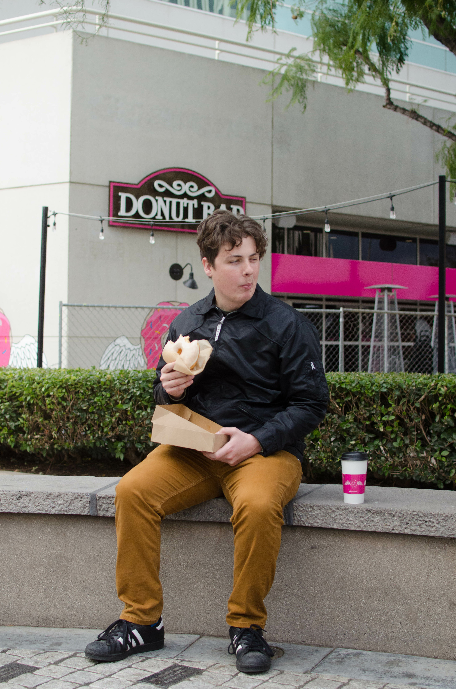
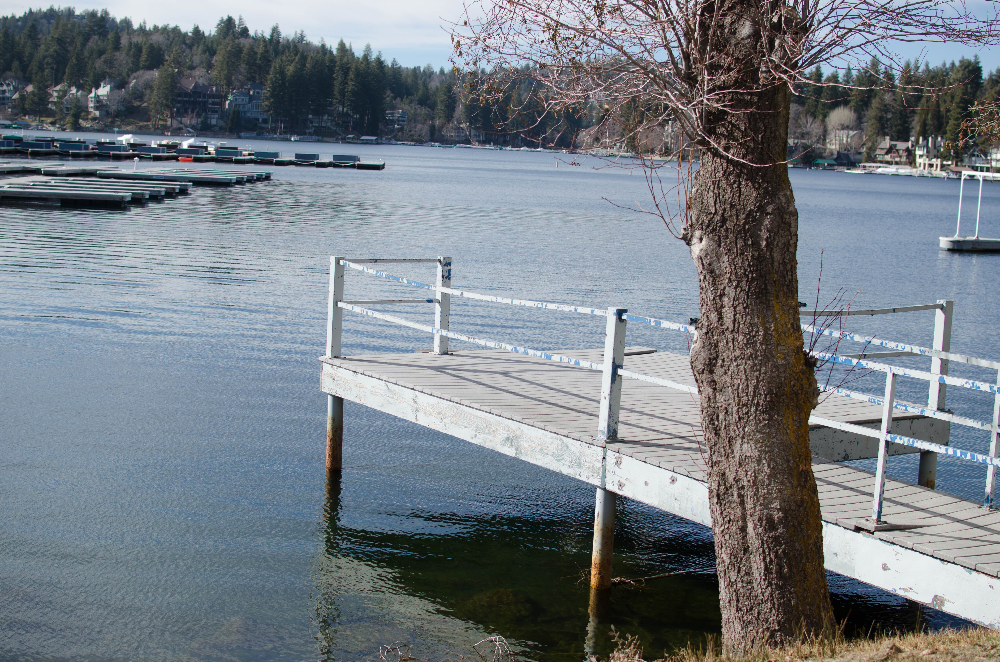
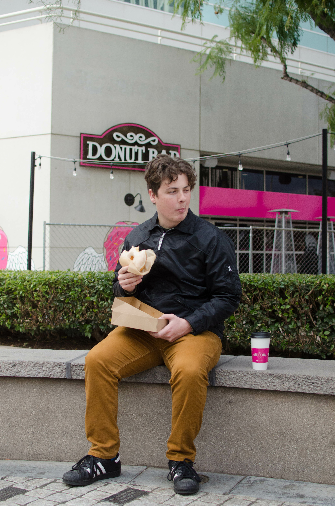
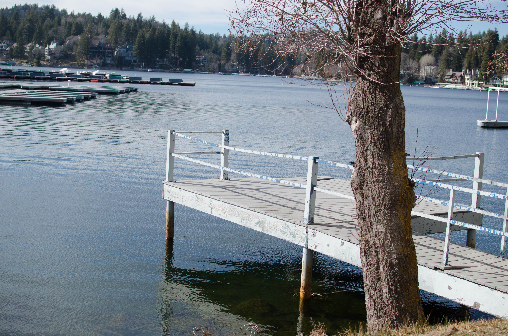

Joseph Tucker
Joe Tucker English Major
My name is Joe Tucker. I love cars, ducks, and my beautiful girlfriend Gabi. I am currrently a cook at pizza hut but have many hobbies.
Some of which include making beer, learning to code, and even reading legal documents to understand the law better. I have created this site to show future employers that I am well educated, trustworthy, and most of all I stand out from the competition, I mean how many prospects have their own resume website. I grew up in Lake Arrowhead CA and moved to Corona/Riverside when I was just 12 years old. I have spent a great deal of my life in the pursuit of understanding automobiles and just recently discovered my calling as an educator. I hope this bio helps you all understand me as a prospect and who I am. Otherwise, the rest of this is just for my CS8 course. I truly can not fathom working on code and this class has allowed me to see that people who do this for a living are a different kind of person. Where I thrive in creating big horsepower on motors your TA's are truly impressive in being able to figure all of this out and have most of memorized. Some last facts about me would be that I don't know how I'll hit this 500-word minimum along with the fact that I am not even Halfway there currently. I would hope that the minimum is not something that is being looked at real close and that it is respected that some people can not hit that minimum talking about themselves as that is a little gaudy. A question the TA who grades this might have is why Ducks? it is simple really when I lived in Arrowhead the only thing my family could afford for us kids to go do was to feed the ducks. So since a young age, I have always enjoyed feeding the little guys as it was my only activity I could do as there are no parks or playgrounds for little kids in the mountains so I just ended up feeding the ducks pretty often. See even after telling my origin story on the ducks I have yet to hit 500 words. This is very time consuming and I hope you understand when you read this that it is just not possible for some to write that much on themselves. The picture icon on my webpage is two ducks btw so that should be interesting. It is a top tier duck with its little wings and sitting in the water. Otherwise, that is all I really have to say about myself. I hope you enjoyed this piece of life that is mine and hopefully you got a chuckle during your grading. Time to go see if CTRL f works to find all these John doe references you know what I mean. Some times this work is just grinding but it is the most rewarding thing I have done at UCR so far.
Experience
Cook
• Make orders correctly in under 4 min. (Efficiency that I carried over from the lean system of production I was taught at other places helped with this).
• Keep my work area clean and tidy.s
• Assist coworkers with anything they needed.
Shift Lead
• Freezing the ice cream that is made to order.
• Opening the store/closing the store. Making sure my staff and I handle all the appropriate duties involved (Cleaning, counting out cash drawer, making sure everything is stocked).
Unloader
• Unloading Trucks (semi-trailers).
• Attendance, we worked as a four-man crew and had to unload the truck at 4Am. Attendance was a key part of this job.
• Heavy lifting and stocking the shelves in the store
Education
UC Riverside
University of California Riverside
University of California Riverside
Portfolio



 